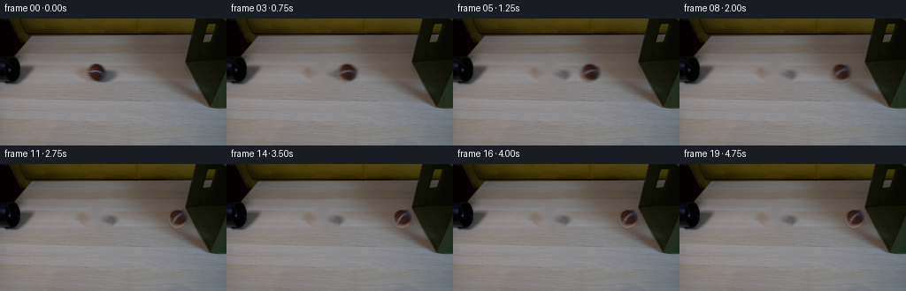
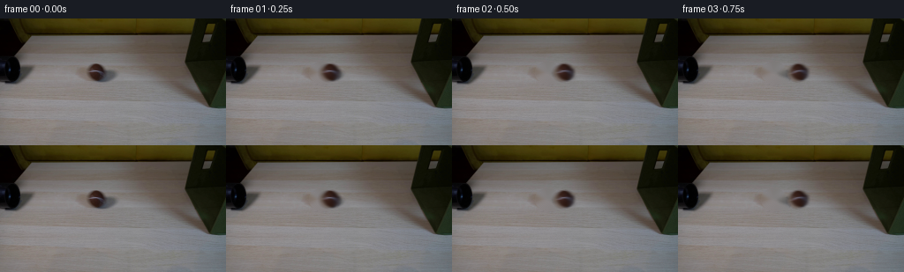
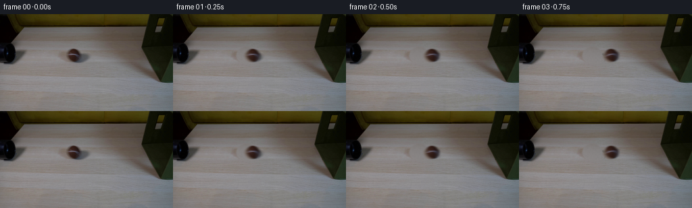
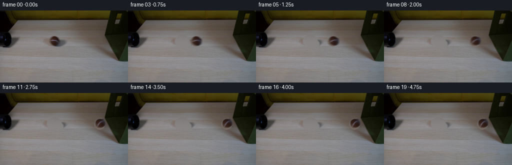

CODING AGENTS AS PIXEL WORLD MODELS
traex/DeepSeek-V4.1-Flash · 0152
点击播放 · 原生 RGB 像素
逐轮保存的候选
回放视频、检查图与代码变化。
每份候选均可单独播放。实际图片检查记录在下方工具轨迹中。
候选 01播放与检查图
点击播放 · 原生 RGB 像素


展开代码变化
--- 上一保存版本
+++ 本次保存版本
@@ -0,0 +1,229 @@
+from pathlib import Path
+
+import cv2
+import numpy as np
+from PIL import Image
+
+import artifact_io
+
+
+WIDTH = 256
+HEIGHT = 144
+FRAMES = 20
+FPS = 4.0
+BALL_CENTER = np.array([108.0, 61.0], dtype=np.float64)
+BALL_RADII = np.array([11.8, 10.5], dtype=np.float64)
+BOX_CONTACT_X = 214.0
+CONTACT_TIME = 10.2
+
+
+def ellipse_mask(shape, center, radii, softness=1.2):
+ yy, xx = np.mgrid[: shape[0], : shape[1]]
+ radii = np.asarray(radii, dtype=np.float64)
+ distance = np.sqrt(
+ ((xx - center[0]) / radii[0]) ** 2
+ + ((yy - center[1]) / radii[1]) ** 2
+ )
+ return np.clip((1.0 - distance) * radii.mean() / softness + 0.5, 0.0, 1.0)
+
+
+def make_plate(frame):
+ """Remove the visible ball and its contact shadow from the photographic plate."""
+ mask = np.zeros((HEIGHT, WIDTH), dtype=np.uint8)
+ body = ellipse_mask((HEIGHT, WIDTH), (108.0, 61.0), (14.5, 12.5), 1.0)
+ shadow = ellipse_mask((HEIGHT, WIDTH), (112.5, 66.0), (14.0, 8.5), 1.0)
+ mask[np.maximum(body, shadow) > 0.08] = 255
+
+ bgr = cv2.cvtColor(frame, cv2.COLOR_RGB2BGR)
+ repaired = cv2.inpaint(bgr, mask, 4, cv2.INPAINT_TELEA)
+ repaired = cv2.cvtColor(repaired, cv2.COLOR_BGR2RGB).astype(np.float32)
+
+ # The table is locally smooth. Blend the repair softly so its edge cannot
+ # read as a cut-out when the ball moves away.
+ soft = cv2.GaussianBlur(mask.astype(np.float32) / 255.0, (0, 0), 1.1)
+ soft = np.clip(soft * 1.35, 0.0, 1.0)[..., None]
+ plate = frame.astype(np.float32) * (1.0 - soft) + repaired * soft
+ return np.clip(plate, 0.0, 255.0)
+
+
+def make_ball_sprite(frame):
+ """Crop the existing tennis ball and turn its elliptical silhouette into alpha."""
+ x0, y0, x1, y1 = 92, 45, 126, 79
+ crop = frame[y0:y1, x0:x1].astype(np.float32)
+ alpha = ellipse_mask(
+ crop.shape[:2],
+ (BALL_CENTER[0] - x0, BALL_CENTER[1] - y0),
+ BALL_RADII,
+ softness=1.15,
+ )
+
+ # Keep the photographed colour and grain, but suppress background bleed at
+ # the silhouette by pushing edge chroma toward the ball's interior colour.
+ core = crop[9:20, 10:23].reshape(-1, 3)
+ core_color = np.median(core, axis=0)
+ edge_weight = np.clip((alpha - 0.05) / 0.45, 0.0, 1.0)[..., None]
+ crop = core_color + (crop - core_color) * edge_weight
+ return crop, alpha
+
+
+def box_warp(frame, dx):
+ """Apply a very small elastic response to the box's left face."""
+ if abs(dx) < 0.02:
+ return frame
+
+ yy, xx = np.mgrid[:HEIGHT, :WIDTH].astype(np.float32)
+ edge = 213.0 + np.maximum(yy - 62.0, 0.0) * 0.29
+ influence = np.exp(-((yy - 63.0) / 22.0) ** 2)
+ local = np.clip((xx - edge + 4.0) / 5.0, 0.0, 1.0)
+ displacement = dx * influence * local
+ map_x = xx - displacement
+ map_y = yy + 0.12 * dx * influence * local
+ map_x = np.ascontiguousarray(map_x, dtype=np.float32)
+ map_y = np.ascontiguousarray(map_y, dtype=np.float32)
+ warped = cv2.remap(
+ frame.astype(np.float32),
+ map_x,
+ map_y,
+ interpolation=cv2.INTER_LINEAR,
+ borderMode=cv2.BORDER_REFLECT_101,
+ )
+ return warped
+
+
+def ball_position(t):
+ """Continuous-time position and rolling angle, in frame units."""
+ if t <= CONTACT_TIME:
+ x = BALL_CENTER[0] + (BOX_CONTACT_X - BALL_RADII[0] - BALL_CENTER[0]) * (
+ t / CONTACT_TIME
+ )
+ vx = (BOX_CONTACT_X - BALL_RADII[0] - BALL_CENTER[0]) / CONTACT_TIME
+ angle = (x - BALL_CENTER[0]) / BALL_RADII[1]
+ return x, BALL_CENTER[1], vx, angle
+
+ dt = t - CONTACT_TIME
+ x = BOX_CONTACT_X - BALL_RADII[0] - 4.7 * (1.0 - np.exp(-dt / 1.85))
+ vx = -4.7 / 1.85 * np.exp(-dt / 1.85)
+ angle = (BOX_CONTACT_X - BALL_RADII[0] - BALL_CENTER[0]) / BALL_RADII[1] + (
+ BOX_CONTACT_X - BALL_RADII[0] - x
+ ) / BALL_RADII[1]
+ return x, BALL_CENTER[1], vx, angle
+
+
+def render_ball_layer(plate, x, y, angle):
+ sprite, alpha = make_ball_sprite(FRAME0)
+ h, w = sprite.shape[:2]
+
+ # Move the extracted ball by its centre rather than its crop corner.
+ center_in_sprite = (BALL_CENTER[0] - 92.0, BALL_CENTER[1] - 45.0)
+ rotation = cv2.getRotationMatrix2D(center_in_sprite, np.degrees(angle) * 0.10, 1.0)
+ rotated_rgb = cv2.warpAffine(
+ sprite,
+ rotation,
+ (w, h),
+ flags=cv2.INTER_LINEAR,
+ borderMode=cv2.BORDER_REFLECT_101,
+ )
+ rotated_a = cv2.warpAffine(
+ alpha,
+ rotation,
+ (w, h),
+ flags=cv2.INTER_LINEAR,
+ borderMode=cv2.BORDER_CONSTANT,
+ borderValue=0.0,
+ )
+
+ canvas_rgb = np.zeros((HEIGHT, WIDTH, 3), dtype=np.float32)
+ canvas_a = np.zeros((HEIGHT, WIDTH), dtype=np.float32)
+ left = int(round(x - center_in_sprite[0]))
+ top = int(round(y - center_in_sprite[1]))
+ fx = x - center_in_sprite[0] - left
+ fy = y - center_in_sprite[1] - top
+ shift = np.array([[1.0, 0.0, fx], [0.0, 1.0, fy]], dtype=np.float32)
+ moved_rgb = cv2.warpAffine(
+ rotated_rgb,
+ shift,
+ (w, h),
+ flags=cv2.INTER_LINEAR,
+ borderMode=cv2.BORDER_CONSTANT,
+ borderValue=0.0,
+ )
+ moved_a = cv2.warpAffine(
+ rotated_a,
+ shift,
+ (w, h),
+ flags=cv2.INTER_LINEAR,
+ borderMode=cv2.BORDER_CONSTANT,
+ borderValue=0.0,
+ )
+
+ x0 = max(0, left)
+ y0 = max(0, top)
+ x1 = min(WIDTH, left + w)
+ y1 = min(HEIGHT, top + h)
+ if x0 < x1 and y0 < y1:
+ sx0 = x0 - left
+ sy0 = y0 - top
+ sx1 = sx0 + x1 - x0
+ sy1 = sy0 + y1 - y0
+ canvas_rgb[y0:y1, x0:x1] = moved_rgb[sy0:sy1, sx0:sx1]
+ canvas_a[y0:y1, x0:x1] = moved_a[sy0:sy1, sx0:sx1]
+
+ return canvas_rgb, np.clip(canvas_a, 0.0, 1.0)
+
+
+def add_shadow(image, x, y):
+ yy, xx = np.mgrid[:HEIGHT, :WIDTH]
+ cx, cy = x + 2.7, y + 5.0
+ d = ((xx - cx) / 13.2) ** 2 + ((yy - cy) / 4.6) ** 2
+ shadow = np.clip(1.0 - d, 0.0, 1.0) ** 1.3
+ shadow = cv2.GaussianBlur(shadow.astype(np.float32), (0, 0), 1.0)
+ factor = 1.0 - 0.20 * shadow[..., None]
+ return image * factor
+
+
+def composite(image, x, y, angle):
+ rgb, alpha = render_ball_layer(image, x, y, angle)
+ return image * (1.0 - alpha[..., None]) + rgb * alpha[..., None]
+
+
+def generate():
+ global FRAME0
+ case_dir = Path(__file__).resolve().parent
+ FRAME0 = np.asarray(Image.open(case_dir / "first_frame.png").convert("RGB"), dtype=np.uint8)
+ assert FRAME0.shape == (HEIGHT, WIDTH, 3)
+
+ plate = make_plate(FRAME0)
+ frames = np.empty((FRAMES, HEIGHT, WIDTH, 3), dtype=np.uint8)
+ frames[0] = FRAME0
+
+ # A five-sample shutter gives a natural 4 fps rolling blur without smearing
+ # the ball into an unreadable streak.
+ shutter_offsets = np.linspace(-0.19, 0.19, 5)
+ for index in range(1, FRAMES):
+ base = plate.copy()
+ if index >= int(CONTACT_TIME):
+ dt = index - CONTACT_TIME
+ dx = 1.15 * np.exp(-max(dt, 0.0) / 2.1) * np.cos(max(dt, 0.0) * 2.1)
+ base = box_warp(base, dx)
+
+ accum = np.zeros_like(base)
+ for offset in shutter_offsets:
+ t = index + offset
+ x, y, vx, angle = ball_position(t)
+ sub = add_shadow(base, x, y)
+ sub = composite(sub, x, y, angle)
+ accum += sub
+ accum /= len(shutter_offsets)
+
+ # Tiny exposure variation keeps the locked-off camera from feeling like
+ # a frozen still, while staying far below visible flicker.
+ exposure = 1.0 + 0.0015 * np.sin(index * 1.7)
+ frames[index] = np.clip(accum * exposure + 0.5, 0.0, 255.0).astype(np.uint8)
+
+ frames[0] = FRAME0
+ artifact_io.save(frames, case_dir)
+ return frames
+
+
+if __name__ == "__main__":
+ generate()
候选 02播放与检查图
点击播放 · 原生 RGB 像素

展开代码变化
--- 上一保存版本
+++ 本次保存版本
@@ -29,19 +29,55 @@
def make_plate(frame):
"""Remove the visible ball and its contact shadow from the photographic plate."""
- mask = np.zeros((HEIGHT, WIDTH), dtype=np.uint8)
+ mask = np.zeros((HEIGHT, WIDTH), dtype=np.float32)
body = ellipse_mask((HEIGHT, WIDTH), (108.0, 61.0), (14.5, 12.5), 1.0)
shadow = ellipse_mask((HEIGHT, WIDTH), (112.5, 66.0), (14.0, 8.5), 1.0)
- mask[np.maximum(body, shadow) > 0.08] = 255
-
- bgr = cv2.cvtColor(frame, cv2.COLOR_RGB2BGR)
- repaired = cv2.inpaint(bgr, mask, 4, cv2.INPAINT_TELEA)
- repaired = cv2.cvtColor(repaired, cv2.COLOR_BGR2RGB).astype(np.float32)
-
- # The table is locally smooth. Blend the repair softly so its edge cannot
- # read as a cut-out when the ball moves away.
- soft = cv2.GaussianBlur(mask.astype(np.float32) / 255.0, (0, 0), 1.1)
- soft = np.clip(soft * 1.35, 0.0, 1.0)[..., None]
+ mask = np.maximum(body, shadow)
+
+ # Fit the smooth tabletop illumination just outside the removed object.
+ yy, xx = np.mgrid[:HEIGHT, :WIDTH]
+ roi = (xx >= 72) & (xx <= 144) & (yy >= 35) & (yy <= 87)
+ samples = roi & (mask < 0.01) & (frame.mean(axis=2) > 100)
+ sx = xx[samples].astype(np.float64)
+ sy = yy[samples].astype(np.float64)
+ design = np.column_stack(
+ [
+ np.ones_like(sx),
+ sx,
+ sy,
+ sx * sx,
+ sy * sy,
+ sx * sy,
+ ]
+ )
+ colors = frame[samples].astype(np.float64)
+ coefficients, *_ = np.linalg.lstsq(design, colors, rcond=None)
+
+ all_sx = xx[roi].astype(np.float64)
+ all_sy = yy[roi].astype(np.float64)
+ all_design = np.column_stack(
+ [
+ np.ones_like(all_sx),
+ all_sx,
+ all_sy,
+ all_sx * all_sx,
+ all_sy * all_sy,
+ all_sx * all_sy,
+ ]
+ )
+ fitted = (all_design @ coefficients).reshape((all_sx.shape[0], 3))
+ repaired = frame.astype(np.float32)
+ repaired[roi] = fitted.astype(np.float32)
+
+ # Add a little of the original plate's fine grain so the fill matches the
+ # photographic texture instead of looking like a mathematically flat patch.
+ grain = np.random.default_rng(152).normal(0.0, 1.35, (HEIGHT, WIDTH, 1))
+ grain = cv2.GaussianBlur(grain.astype(np.float32), (0, 0), 0.7)
+ repaired += grain.reshape(HEIGHT, WIDTH, 1)
+
+ # Blend the repair softly so its boundary cannot read as a cut-out.
+ soft = cv2.GaussianBlur(mask, (0, 0), 1.2)
+ soft = np.clip(soft * 1.5, 0.0, 1.0)[..., None]
plate = frame.astype(np.float32) * (1.0 - soft) + repaired * soft
return np.clip(plate, 0.0, 255.0)
@@ -57,12 +93,6 @@
softness=1.15,
)
- # Keep the photographed colour and grain, but suppress background bleed at
- # the silhouette by pushing edge chroma toward the ball's interior colour.
- core = crop[9:20, 10:23].reshape(-1, 3)
- core_color = np.median(core, axis=0)
- edge_weight = np.clip((alpha - 0.05) / 0.45, 0.0, 1.0)[..., None]
- crop = core_color + (crop - core_color) * edge_weight
return crop, alpha
候选 03播放与检查图
点击播放 · 原生 RGB 像素

展开代码变化
--- 上一保存版本
+++ 本次保存版本
@@ -131,8 +131,8 @@
return x, BALL_CENTER[1], vx, angle
dt = t - CONTACT_TIME
- x = BOX_CONTACT_X - BALL_RADII[0] - 4.7 * (1.0 - np.exp(-dt / 1.85))
- vx = -4.7 / 1.85 * np.exp(-dt / 1.85)
+ x = BOX_CONTACT_X - BALL_RADII[0] - 4.7 * (1.0 - np.exp(-dt / 1.05))
+ vx = -4.7 / 1.05 * np.exp(-dt / 1.05)
angle = (BOX_CONTACT_X - BALL_RADII[0] - BALL_CENTER[0]) / BALL_RADII[1] + (
BOX_CONTACT_X - BALL_RADII[0] - x
) / BALL_RADII[1]
可观测工具轨迹
实际执行的命令与返回图片。
命令 1exit 0
/bin/bash -c "pwd && rg --files -g '"'!*__pycache__*'"'"
命令 2exit 0
/bin/bash -c "sed -n '1,240p' prompt.txt"
命令 3exit 0
/bin/bash -c "sed -n '1,280p' GENERATION_RULES.md"
命令 4exit 0
/bin/bash -c "find . -maxdepth 2 -type f -printf '%p %s bytes\\n' | sort"
命令 5exit 0
/bin/bash -c "sed -n '1,260p' artifact_io.py"
命令 6exit 0
/bin/bash -c "sed -n '1,260p' player_template.html"
命令 7exit 127
/bin/bash -c "file first_frame.png && python - <<'PY'
from PIL import Image
im=Image.open('first_frame.png')
print(im.mode, im.size)
PY"命令 8exit 0
/bin/bash -c "python - <<'PY'
from PIL import Image
import numpy as np
im=np.array(Image.open('first_frame.png').convert('RGB'))
print('shape',im.shape,'dtype',im.dtype)
for y in [0,8,16,24,32,40,48,56,64,72,80,88,96,104,112,120,128,136,143]:
print(y, np.round(im[y].mean(0),1), im[y].min(0), im[y].max(0))
# dominant quantized colors
q=(im//16)*16
c,n=np.unique(q.reshape(-1,3),axis=0,return_counts=True)
idx=np.argsort(n)[-20:][::-1]
print('dominant')
for i in idx: print(c[i], n[i], round(n[i]/im.shape[0]/im.shape[1]*100,2))
PY"命令 9exit 0
/bin/bash -c "python - <<'PY'
from PIL import Image
im=Image.open('first_frame.png')
im.resize((1024,576),Image.Resampling.NEAREST).save('.tmp/first_frame_4x.png')
PY"命令 10exit 0
/bin/bash -c "python - <<'PY'
from PIL import Image
import numpy as np
from sklearn.cluster import KMeans
im=np.array(Image.open('first_frame.png').convert('RGB'))
a=im.reshape(-1,3).astype(float)
# subsample + kmeans
rng=np.random.default_rng(0)
idx=rng.choice(len(a),12000,replace=False)
km=KMeans(n_clusters=12,random_state=0,n_init=10).fit(a[idx])
lab=km.predict(a)
c=km.cluster_centers_
for i in range(12):
m=(lab==i).reshape(im.shape[:2]); ys,xs=np.where(m)
print(i, np.round(c[i]).astype(int), 'count',len(xs),'bbox', (xs.min(),ys.min(),xs.max(),ys.max()) if len(xs) else None, 'centroid', (round(xs.mean(),1),round(ys.mean(),1)) if len(xs) else None)
PY"命令 11exit 0
/bin/bash -c "python - <<'PY'
from PIL import Image
import numpy as np, colorsys
im=np.array(Image.open('first_frame.png').convert('RGB')).astype(float)
hsv=np.array([colorsys.rgb_to_hsv(*(p/255)) for p in im.reshape(-1,3)]).reshape(144,256,3)
for name, mask in [
('dark', im.mean(2)<40),('greenish',(im[:,:,1]>im[:,:,0]*1.05)&(im[:,:,1]>im[:,:,2]*1.1)),('brown',(im[:,:,0]>im[:,:,1]*1.12)&(im[:,:,1]>im[:,:,2]*1.15)),('bright',im.mean(2)>150),('black',im.max(2)<35),('gray',(im.max(2)-im.min(2)<15))]:
ys,xs=np.where(mask)
print(name, len(xs), 'bbox', (xs.min(),ys.min(),xs.max(),ys.max()) if len(xs) else None, 'centroid', (round(xs.mean(),1),round(ys.mean(),1)) if len(xs) else None)
print('hue bins')
h=hsv[:,:,0]; s=hsv[:,:,1]; v=hsv[:,:,2]
for lo in np.arange(0,1,.1):
m=(h>=lo)&(h<lo+.1)&(s>.15)
ys,xs=np.where(m)
print(round(lo,1),len(xs), (xs.min(),ys.min(),xs.max(),ys.max()) if len(xs) else None)
PY"命令 12exit 0
/bin/bash -c "python - <<'PY'
from PIL import Image
import numpy as np
im=np.array(Image.open('first_frame.png').convert('RGB')).astype(float)
h,w,_=im.shape
# 4x4 blocks with hue/color categories
for y in range(0,h,4):
s=''
for x in range(0,w,4):
p=im[y:y+4,x:x+4].mean((0,1)); r,g,b=p
br=p.mean(); sat=(p.max()-p.min())/(p.max()+1)
if br<25: c='#'
elif br<50: c='@'
elif br<75: c='%'
elif br<100: c='O'
elif br<125: c='o'
elif br<150: c='.'
else: c=' '
if sat>.22:
if r>g*1.15 and g>b*1.15: c='B' if br>80 else 'b'
elif g>r*1.06 and g>b*1.15: c='G' if br>80 else 'g'
elif r>g*1.1 and b>g*1.1: c='P'
s+=c
print(f'{y:03d} '+s)
PY"命令 13exit 0
/bin/bash -c "python - <<'PY' mods=['cv2','scipy','skimage','numpy','PIL'] for m in mods: try: mod=__import__(m); print(m,'ok',getattr(mod,'__version__','')) except Exception as e: print(m,'no',e) PY"
命令 14exit 0
/bin/bash -c "python - <<'PY'
import cv2,numpy as np
im=cv2.imread('first_frame.png')
for name,arr in [('gray',cv2.cvtColor(im,cv2.COLOR_BGR2GRAY)),('h',cv2.cvtColor(im,cv2.COLOR_BGR2HSV)[:,:,0]),('s',cv2.cvtColor(im,cv2.COLOR_BGR2HSV)[:,:,1])]:
edges=cv2.Canny(arr,30,90)
lines=cv2.HoughLinesP(edges,1,np.pi/180,threshold=20,minLineLength=15,maxLineGap=4)
print('\\n',name)
if lines is not None:
out=[]
for l in lines[:,0]:
x1,y1,x2,y2=map(int,l); length=((x2-x1)**2+(y2-y1)**2)**.5; ang=np.degrees(np.arctan2(y2-y1,x2-x1))
out.append((round(length,1),round(ang,1),(x1,y1,x2,y2)))
for z in sorted(out,reverse=True)[:35]: print(z)
PY"命令 15exit 1
/bin/bash -c "python - <<'PY'
from PIL import Image
import numpy as np
from sklearn.cluster import KMeans
im=np.array(Image.open('first_frame.png').convert('RGB'))
# fit 10 colors on all pixels subsampled
pix=im.reshape(-1,3)
km=KMeans(10,random_state=1,n_init=10).fit(pix[::5])
lab=km.predict(pix).reshape(144,256)
colors=np.round(km.cluster_centers_).astype(int)
print('clusters:')
for i,c in enumerate(colors):
m=lab==i; ys,xs=np.where(m)
print(i, c, 'count',m.sum(),'bbox',(xs.min(),ys.min(),xs.max(),ys.max()),'cent',(round(xs.mean()),round(ys.mean())))
# assign chars sorted by mean brightness
chars=' .:-=+*#%@'
order=np.argsort(colors.mean(1))
charmap={idx:chars[i] for i,idx in enumerate(order)}
print('map 2x2 (y from 0):')
for y in range(0,144,4):
print(f'{y:03d} '+''.join(charmap[lab[y:y+4,x:x+2].ravel()[np.bincount(lab[y:y+4,x:x+2].ravel()).argmax()]] for x in range(0,256,2)))
PY"命令 16exit 0
/bin/bash -c "python - <<'PY'
from PIL import Image
import numpy as np
im=np.array(Image.open('first_frame.png').convert('RGB')).astype(float)
# classify per 2x2 with rough brightness and saturation
chars=' .:-=+*#%@'
for y in range(0,144,4):
s=''
for x in range(0,256,2):
p=im[y:y+4,x:x+2].mean((0,1)); br=p.mean(); sat=(p.max()-p.min())/(p.max()+1)
c=chars[min(9,int(br/14))]
if sat>.30:
if p[0]>p[1]*1.15 and p[1]>p[2]*1.15: c='B'
elif p[1]>p[0]*1.08 and p[1]>p[2]*1.2: c='G'
elif p[0]>p[1]*1.15 and p[2]>p[1]*1.15: c='P'
s+=c
print(f'{y:03d} '+s)
PY"命令 17exit 0
/bin/bash -c "python - <<'PY'
import cv2,numpy as np
im=cv2.imread('first_frame.png')[:,:,::-1]
hsv=cv2.cvtColor(im,cv2.COLOR_RGB2HSV)
# save category masks for possible inspect numerically
cats={
'dark':(im.mean(2)<30),
'black':(im.max(2)<25),
'green':(hsv[:,:,0]>25)&(hsv[:,:,0]<60)&(hsv[:,:,1]>60)&(hsv[:,:,2]<160),
'wood':(hsv[:,:,0]>5)&(hsv[:,:,0]<30)&(hsv[:,:,1]>20)&(hsv[:,:,2]>50),
'brown':(hsv[:,:,0]>5)&(hsv[:,:,0]<25)&(hsv[:,:,1]>80)&(hsv[:,:,2]>20),
'gray':(hsv[:,:,1]<20)&(hsv[:,:,2]>80),
}
for name,m in cats.items():
n,lab,stats,cent=cv2.connectedComponentsWithStats(m.astype('uint8'),8)
comps=[]
for i in range(1,n):
x,y,w,h,area=stats[i];
if area>20: comps.append((area,(x,y,w,h),tuple(np.round(cent[i],1))))
print('\\n',name,'total',m.sum())
for c in sorted(comps,reverse=True)[:15]:print(c)
PY"命令 18exit 0
/bin/bash -c "python - <<'PY'
from PIL import Image
import numpy as np
im=np.array(Image.open('first_frame.png').convert('RGB')).astype(int)
# print detailed colors at points manually chosen
pts=[(128,5),(128,30),(128,50),(128,70),(128,90),(128,110),(128,130),(128,140),
(50,10),(50,30),(50,50),(50,70),(50,90),(50,110),
(220,10),(220,30),(220,50),(220,70),(220,90),(220,110),
(100,55),(105,60),(110,65),(120,70),(130,75),(140,80),(150,85),
(200,50),(210,70),(230,50)]
for x,y in pts: print((x,y),im[y,x])
PY"命令 19exit 0
/bin/bash -c "python - <<'PY'
from PIL import Image
import numpy as np
im=np.array(Image.open('first_frame.png').convert('RGB')).astype(int)
m=im.max(2)<25
for y in range(0,144,4):
xs=np.where(m[y:y+4].any(0))[0]
# runs
runs=[]
if len(xs):
s=p=xs[0]
for x in xs[1:]:
if x>p+1: runs.append((s,p)); s=x
p=x
runs.append((s,p))
print(y, runs)
PY"命令 20exit 0
/bin/bash -c "python - <<'PY'
import cv2,numpy as np
im=cv2.imread('first_frame.png')[:,:,::-1]
hsv=cv2.cvtColor(im,cv2.COLOR_RGB2HSV)
# show green mask boundaries per row
for y in range(0,105,3):
m=(hsv[y,:,0]>25)&(hsv[y,:,0]<60)&(hsv[y,:,1]>60)&(hsv[y,:,2]<170)
xs=np.where(m)[0]
runs=[]
if len(xs):
s=p=xs[0]
for x in xs[1:]:
if x>p+1:
if p-s>2:runs.append((s,p))
s=x
p=x
if p-s>2:runs.append((s,p))
print(y,runs)
PY"命令 21exit 0
/bin/bash -c "python - <<'PY'
from PIL import Image
import numpy as np
im=np.array(Image.open('first_frame.png').convert('RGB')).astype(int)
# RGB values every 16px, label
for y in range(0,144,8):
print('y',y)
for x in range(0,256,16):
p=im[y:y+8,x:x+16].mean((0,1)).round().astype(int)
print(f'{x:3}:{p[0]:3},{p[1]:3},{p[2]:3}',end=' ')
print()
PY"命令 22exit 0
/bin/bash -c "python - <<'PY'
from PIL import Image
import numpy as np
im=np.array(Image.open('first_frame.png').convert('RGB'))
# find circular/dark region around x 90-125 y 45-85
for y in range(44,90,2):
s=''
for x in range(72,140,2):
p=im[y,x]; br=p.mean(); sat=(p.max()-p.min())/(p.max()+1)
if p.mean()<25: c='#'
elif p.mean()<45:c='@'
elif p.mean()<65:c='%'
elif p.mean()<85:c='o'
elif p.mean()<105:c='.'
elif p.mean()<125:c='-'
elif p.mean()<145:c='='
else:c='+'
if sat>.3:
if p[0]>p[1]*1.15 and p[1]>p[2]*1.1: c='B'
elif p[1]>p[0]*1.08 and p[1]>p[2]*1.15:c='G'
s+=c
print(f'{y:02d} {s}')
PY"命令 23exit 0
/bin/bash -c "python - <<'PY'
from PIL import Image
import numpy as np
im=np.array(Image.open('first_frame.png').convert('RGB'))
# Print every pixel region x 85..130 y 45..78 as 2-char luminance and color tags
chars=' .:-=+*#%@'
for y in range(45,79):
s=''
for x in range(82,133):
p=im[y,x].astype(float); br=p.mean(); sat=(p.max()-p.min())/(p.max()+1)
if sat>.3:
if p[0]>p[1]*1.15 and p[1]>p[2]*1.1: c='B'
elif p[1]>p[0]*1.08 and p[1]>p[2]*1.15:c='G'
else:c=chars[min(9,int(br/14))]
else:c=chars[min(9,int(br/14))]
s+=c
print(f'{y:02d} {s}')
PY"命令 24exit 0
/bin/bash -c "python - <<'PY'
from PIL import Image
import numpy as np, cv2
from sklearn.cluster import KMeans
im=np.array(Image.open('first_frame.png').convert('RGB'))
pix=im.reshape(-1,3)
km=KMeans(20,random_state=3,n_init=10).fit(pix[::4])
lab=km.predict(pix).reshape(144,256)
colors=np.round(km.cluster_centers_).astype(int)
for i,c in enumerate(colors):
m=lab==i; ys,xs=np.where(m)
hsv=cv2.cvtColor(np.uint8([[c]]),cv2.COLOR_RGB2HSV)[0,0]
print(f'{i:2} rgb={tuple(c)} hsv={tuple(map(int,hsv))} n={m.sum():5} bbox=({xs.min()},{ys.min()},{xs.max()},{ys.max()}) cent=({xs.mean():.1f},{ys.mean():.1f})')
PY"命令 25exit 0
/bin/bash -c "python - <<'PY'
import cv2,numpy as np
im=cv2.imread('first_frame.png')
g=cv2.cvtColor(im,cv2.COLOR_BGR2GRAY).astype(float)
# gradient magnitude direction stats around candidate ball
roi=g[45:75,85:125]
gy,gx=np.gradient(roi)
mag=np.hypot(gx,gy)
ys,xs=np.where(mag>25)
print('strong points',len(xs))
for y,x in zip(ys,xs): print(x+85,y+45, round(mag[y,x],1),round(np.degrees(np.arctan2(gy[y,x],gx[y,x])),1))
PY"命令 26exit 0
/bin/bash -c "python - <<'PY'
from PIL import Image
import numpy as np
im=np.array(Image.open('first_frame.png').convert('RGB'))
# compare to likely scene: ball circle at center 104? 61? r 15. Values by row on circle
for y in range(45,80):
xs=[]
for x in range(80,135):
p=im[y,x]; r,g,b=p.astype(float); sat=(p.max()-p.min())/(p.max()+1)
if r>g*1.08 and g>b*1.08 and r>45: xs.append(x)
if xs: print(y,min(xs),max(xs),len(xs))
PY"命令 27exit 0
/bin/bash -c "python - <<'PY'
from PIL import Image
import numpy as np
im=np.array(Image.open('first_frame.png').convert('RGB'))
# pixel RGBs in suspected ball region, sampled grid
for y in range(48,74,2):
print('y',y)
for x in range(88,122,3):
print(f'{x}:{tuple(im[y,x])}',end=' ')
print()
PY"命令 28exit 0
/bin/bash -c "python - <<'PY'
import cv2,numpy as np
im=cv2.imread('first_frame.png')[:,:,::-1]
hsv=cv2.cvtColor(im,cv2.COLOR_RGB2HSV)
# candidate line segment masks in brown ball region
r=im[:,:,0].astype(int);g=im[:,:,1].astype(int);b=im[:,:,2].astype(int)
for condname,m in [('red',(r>g+12)&(g>b+4)&(r>35)),('darkred',(r>g+8)&(g>b+2)&(r>25)&(r<100)),('sat',(hsv[:,:,1]>70)&(hsv[:,:,2]>25)&(hsv[:,:,0]<25))]:
roi=m[45:78,80:135]
n,lab,stats,cent=cv2.connectedComponentsWithStats(roi.astype('uint8'),8)
print(condname)
for i in range(1,n):
x,y,w,h,a=stats[i]
if a>8: print(a,(x+80,y+45,w,h),cent[i]+[80,45])
PY"命令 29exit 0
/bin/bash -c "python - <<'PY'
from PIL import Image
import numpy as np
im=np.array(Image.open('first_frame.png').convert('RGB'))
# print a high-res nearest crop of box and ball to workspace temp
Image.fromarray(im[35:110,60:150]).resize((720,600),Image.Resampling.NEAREST).save('.tmp/ball_crop_8x.png')
# crop tube
Image.fromarray(im[0:110,190:256]).resize((396,660),Image.Resampling.NEAREST).save('.tmp/tube_crop_6x.png')
PY"命令 30exit 0
/bin/bash -c "python - <<'PY'
from PIL import Image
import numpy as np
im=np.array(Image.open('first_frame.png').convert('RGB')).astype(float)
# color stability/local texture magnitude by regions
for name,(x0,y0,x1,y1) in {'boxfront':(220,70,256,100),'boxleft':(195,40,230,100),'tableL':(0,75,100,140),'tableM':(100,100,180,140),'tableR':(180,105,250,140),'wood':(30,20,200,45),'bg':(0,0,200,16)}.items():
a=im[y0:y1,x0:x1]
print(name,'mean',a.mean((0,1)).round(1),'std',a.std((0,1)).round(1),'minmax',a.min((0,1)).astype(int),a.max((0,1)).astype(int))
PY"命令 31exit 0
/bin/bash -c "python - <<'PY'
from PIL import Image
import numpy as np
im=np.array(Image.open('first_frame.png').convert('RGB')).astype(int)
# crop suspected object x85-125 y48-73, print hue chars
import colorsys
for y in range(48,74):
s=''
for x in range(85,126):
p=im[y,x]/255
h,sat,v=colorsys.rgb_to_hsv(*p)
if v<.13:c='#'
elif v<.2:c='@'
elif v<.27:c='%'
elif v<.34:c='O'
elif v<.41:c='o'
elif v<.48:c='.'
elif v<.55:c='-'
elif v<.62:c='='
elif v<.69:c='+'
else:c='*'
if sat>.18:
deg=h*360
if deg<20:c='B' if v<.35 else 'b'
elif deg<45:c='Y' if v<.35 else 'y'
elif deg<90:c='G' if v<.35 else 'g'
elif deg<160:c='C' if v<.35 else 'c'
elif deg<260:c='U' if v<.35 else 'u'
else:c='M' if v<.35 else 'm'
s+=c
print(f'{y:02d} {s}')
PY"命令 32exit 0
/bin/bash -c "python - <<'PY'
from PIL import Image
import numpy as np
im=np.array(Image.open('first_frame.png').convert('RGB')).astype(int)
# print L*a*b? instead use per-pixel RGB exact for suspected ball boundaries, rows 51,54,58,62,66,70
for y in [51,52,53,54,55,56,57,58,59,60,61,62,63,64,65,66,67,68,69,70,71,72]:
s=[]
for x in range(95,123):
p=im[y,x]
# coarse color code by RGB ratio
r,g,b=p
if max(p)-min(p)<8: c='.'
elif r>g*1.2 and g>b*1.2: c='R' if r>55 else 'r'
elif r>g*1.08 and g>b*1.08: c='B' if r>55 else 'b'
elif b>r*1.05 and b>g*1.05: c='V' if b>55 else 'v'
elif g>r*1.05 and g>b*1.05: c='G' if g>55 else 'g'
else: c='o' if max(p)>80 else 'd'
s.append(c)
print(f'{y:02d} '+''.join(s))
PY"命令 33exit 0
/bin/bash -c "python - <<'PY'
from PIL import Image
import numpy as np
im=np.array(Image.open('first_frame.png').convert('RGB')).astype(int)
# inspect exact RGB at a square ring around x 95-123 y 50-73 by listing 5x5 bins
for y in range(48,76,3):
print('y',y)
for x in range(90,130,4):
p=im[y:y+3,x:x+4].mean((0,1)).round().astype(int)
print(tuple(p),end=' ')
print()
PY"命令 34exit 0
/bin/bash -c "python - <<'PY'
from PIL import Image
import numpy as np
im=np.array(Image.open('first_frame.png').convert('RGB')).astype(float)
# test ball circle center/r with avg background-distance and radial color segmentation
Y,X=np.mgrid[:144,:256]
best=[]
for cx in np.arange(100,115,.5):
for cy in np.arange(56,65,.5):
for r in np.arange(8,16,.5):
m=(X-cx)**2+(Y-cy)**2<=r*r
# brown pixels measure
p=im[m]; score=((p[:,0]>p[:,1]*1.08)&(p[:,1]>p[:,2]*1.04)&(p[:,0]>35)).mean()
best.append((score,cx,cy,r,m.sum()))
print(sorted(best,reverse=True)[:20])
PY"命令 35exit 0
/bin/bash -c "python - <<'PY'
from PIL import Image
import numpy as np
im=np.array(Image.open('first_frame.png').convert('RGB')).astype(int)
# run color object segmentation on full image by nearest to ball core color, check components
p=im[58:68,102:112].reshape(-1,3).mean(0)
print('core',p)
d=np.linalg.norm(im-p,axis=2)
for th in [20,30,40,50,60,80]:
m=d<th
import cv2
n,lab,stats,cent=cv2.connectedComponentsWithStats(m.astype('uint8'),8)
comps=[]
for i in range(1,n):
x,y,w,h,a=stats[i]
if a>10: comps.append((a,(x,y,w,h)))
print(th,sorted(comps,reverse=True)[:10])
PY"命令 36exit 0
/bin/bash -c "python - <<'PY'
from PIL import Image
import numpy as np
im=np.array(Image.open('first_frame.png').convert('RGB')).astype(float)
Y,X=np.mgrid[:144,:256]
# fit ball center/radius by detecting boundary gradients around x 103 y 62 and color cohesion
# print candidate exact mask score for brown criterion vs radius
for cx,cy in [(103,62),(104,62),(105,62),(106,62),(107,62),(108,62),(109,62),(110,62),(108,60),(108,65)]:
print('center',cx,cy)
for r in [8,10,12,14,16,18,20]:
m=(X-cx)**2+(Y-cy)**2<=r*r
p=im[m]; red=((p[:,0]>p[:,1]+8)&(p[:,0]>p[:,2]+8)).mean(); dark=(p.mean(1)<70).mean(); bd=p.mean(0)
print(r,round(red,2),round(dark,2),bd.round(1))
PY"命令 37exit 0
/bin/bash -c "python - <<'PY'
from PIL import Image
import numpy as np
im=np.array(Image.open('first_frame.png').convert('RGB')).astype(int)
# print exact ball pixel array centered 108,62 using threshold classes and values
for y in range(48,78):
print(f'{y:02d}',' '.join(f'{x}:{im[y,x,0]:02d},{im[y,x,1]:02d},{im[y,x,2]:02d}' for x in range(95,123)))
PY"命令 38exit 0
/bin/bash -c "python - <<'PY'
from PIL import Image
import numpy as np
im=np.array(Image.open('first_frame.png').convert('RGB')).astype(float)
# inspect box and tube boundary line coordinates via gradients
import cv2
g=cv2.cvtColor(im.astype('uint8'),cv2.COLOR_RGB2GRAY).astype(float)
for y in range(20,105,5):
row=g[y]; dx=np.abs(np.diff(row))
# top peaks
idx=np.argsort(dx)[-8:]
print(y,sorted([(int(x),round(dx[x],1)) for x in idx]))
PY"命令 39exit 0
/bin/bash -c "python - <<'PY'
from PIL import Image
import numpy as np
im=np.array(Image.open('first_frame.png').convert('RGB')).astype(float)
# sample 8x8 blocks in right side to understand tube vs box
for y in range(0,104,4):
print(f'{y:03d}',end=' ')
for x in range(196,256,4):
p=im[y:y+4,x:x+4].mean((0,1)).round().astype(int)
# classify dominant: black, green, gray
if p.max()<35:c='K'
elif p[1]>p[0]*1.05 and p[1]>p[2]*1.15:c='G'
elif p.mean()<65:c='d'
elif p.mean()<100:c='m'
else:c='l'
print(c,end='')
print()
PY"命令 40exit 0
/bin/bash -c "python - <<'PY'
from PIL import Image
import numpy as np
im=np.array(Image.open('first_frame.png').convert('RGB')).astype(float)
# Evaluate gaussian blur / denoise residual. print boundary curves by row greenness threshold
r,g,b=im[:,:,0],im[:,:,1],im[:,:,2]
score=g-(r+b)/2
for y in range(12,104,2):
xs=np.where(score[y]>8)[0]
# longest run
runs=[]
if len(xs):
s=p=xs[0]
for x in xs[1:]:
if x>p+1:
if p-s>3:runs.append((s,p))
s=x
p=x
if p-s>3:runs.append((s,p))
print(y,runs)
PY"命令 41exit 0
/bin/bash -c "python - <<'PY'
from PIL import Image
import numpy as np
im=np.array(Image.open('first_frame.png').convert('RGB')).astype(float)
# estimate box front plane shape by strong green score and its edge line
r,g,b=im[:,:,0],im[:,:,1],im[:,:,2]
score=g-(r+b)/2
# mask x>190 and score>8
for y in range(64,103,2):
xs=np.where((score[y]>8)&(np.arange(256)>190))[0]
print(y,(xs.min(),xs.max()) if len(xs) else None)
PY"命令 42exit 0
/bin/bash -c "python - <<'PY'
from PIL import Image
import numpy as np
im=np.array(Image.open('first_frame.png').convert('RGB')).astype(float)
# sample specific long lines through ball
for y in [51,52,53,54,55,56,57,58,59,60,61,62,63,64,65,66,67,68,69,70,71]:
vals=[]
for x in range(80,135):
r,g,b=im[y,x]
if (r>g+5)&(g>b+3): vals.append(x)
# runs
runs=[]
if vals:
s=p=vals[0]
for x in vals[1:]:
if x>p+1:runs.append((s,p));s=x
p=x
runs.append((s,p))
print(y,runs)
PY"命令 43exit 0
/bin/bash -c "python - <<'PY'
from PIL import Image
import numpy as np
im=np.array(Image.open('first_frame.png').convert('RGB')).astype(int)
# print exact y=52-70 x=95-125 for saturation? no use min/max ascii
chars=' .:-=+*#%@'
for y in range(48,75):
s=''
for x in range(85,130):
p=im[y,x]
v=p.mean()
c=chars[min(9,int(v/15))]
if p[0]-p[2]>25: c='R'
if p[0]-p[1]>20: c='B'
s+=c
print(y,s)
PY"命令 44exit 0
/bin/bash -c "python - <<'PY'
from PIL import Image
import numpy as np
im=np.array(Image.open('first_frame.png').convert('RGB')).astype(float)
# print avg RGB and gradient of suspected box front boundaries by row using x 215..256
for y in range(64,104,2):
row=im[y,200:256]
print(y, ' '.join(f'{x+200}:{tuple(row[x].round().astype(int))}' for x in range(0,56,4)))
PY"命令 45exit 0
/bin/bash -c "python - <<'PY'
from PIL import Image
import numpy as np
im=np.array(Image.open('first_frame.png').convert('RGB')).astype(float)
# compute local image quality of flat regions and per-channel noise; output gradients at bottom
for y in [70,75,80,85,90,95,100,105,110,120,130,140]:
print(y, np.round(im[y,:200].mean(0),1), np.round(im[y,:200].std(0),1))
PY"命令 46exit 1
/bin/bash -c 'python generate.py'
命令 47exit 1
/bin/bash -c 'python generate.py'
命令 48exit 1
/bin/bash -c 'python generate.py'
命令 49exit 0
/bin/bash -c "python - <<'PY' import numpy as np from generate import * print(np.__version__) yy,xx=np.mgrid[:HEIGHT,:WIDTH].astype(np.float32) edge=213.0+np.maximum(yy-62.0,0.0)*0.29 influence=np.exp(-((yy-63.0)/22.0)**2) local=np.clip((xx-edge+4.0)/5.0,0.0,1.0) dx=1.15 displacement=dx*influence*local map_x=xx-displacement map_y=yy+0.12*dx*influence*local print(map_x.dtype,map_x.shape,map_y.dtype,map_y.shape) PY"
命令 50exit 0
/bin/bash -c "python - <<'PY' import cv2,numpy as np for typ in [np.float32,np.float64,np.int32]: a=np.zeros((144,256,3),dtype=typ); x=np.zeros((144,256),dtype=np.float32); y=x.copy() try: cv2.remap(a,x,y,cv2.INTER_LINEAR);print(typ,'ok') except Exception as e: print(typ,e) PY"
命令 51exit 0
/bin/bash -c "sed -n '65,92p' generate.py"
命令 52exit 0
/bin/bash -c "python - <<'PY'
import cv2,numpy as np
for kwargs in [{},{'interpolation':cv2.INTER_LINEAR},{'borderMode':cv2.BORDER_REFLECT_101},{'interpolation':cv2.INTER_LINEAR,'borderMode':cv2.BORDER_REFLECT_101}]:
a=np.zeros((144,256,3),dtype=np.float32); x=np.zeros((144,256),dtype=np.float32); y=x.copy()
try: cv2.remap(a,x,y,**kwargs);print(kwargs,'ok')
except Exception as e: print(kwargs,e)
PY"命令 53exit 0
/bin/bash -c "python - <<'PY' import cv2 print(cv2.__file__) help(cv2.remap) PY"
命令 54exit 0
/bin/bash -c "python - <<'PY'
import cv2,numpy as np
a=np.zeros((144,256,3),dtype=np.float32); x=np.zeros((144,256),dtype=np.float32); y=x.copy()
for i in range(5):
try:
z=cv2.remap(a,x,y,cv2.INTER_LINEAR)
print('ok',z.dtype)
except Exception as e: print('err',e)
PY"命令 55exit 0
/bin/bash -c "python - <<'PY'
import numpy as np,cv2
from PIL import Image
from generate import *
FRAME0=np.array(Image.open('first_frame.png').convert('RGB'))
plate=make_plate(FRAME0)
print(plate.dtype,plate.shape,plate.flags)
for dx in [1.15]:
try:
z=box_warp(plate,dx);print('ok')
except Exception as e:
print('err',e)
yy,xx=np.mgrid[:HEIGHT,:WIDTH].astype(np.float32);edge=213.0+np.maximum(yy-62.0,0.0)*0.29;influence=np.exp(-((yy-63.0)/22.0)**2);local=np.clip((xx-edge+4.0)/5.0,0.0,1.0);disp=dx*influence*local;mx=xx-disp;my=yy+0.12*dx*influence*local
print(mx.dtype,my.dtype,mx.shape,my.shape,np.isfinite(mx).all(),np.isfinite(my).all())
print(cv2.remap(plate.astype(np.float32),mx,my,cv2.INTER_LINEAR,borderMode=cv2.BORDER_REFLECT_101).shape)
PY"命令 56exit 1
/bin/bash -c 'python generate.py'
命令 57exit 0
/bin/bash -c 'python generate.py'
命令 58exit 0
/bin/bash -c "python - <<'PY'
import numpy as np
from PIL import Image
f0=np.array(Image.open('first_frame.png').convert('RGB'))
g=np.array(Image.open('frames/00.png').convert('RGB'))
print('frame0 identical',np.array_equal(f0,g), 'maxdiff',np.abs(f0.astype(int)-g.astype(int)).max())
p=np.load('pixels.npz')['pixels']; print('pixels',p.shape,p.dtype,'minmax',p.min(),p.max())
PY"命令 59exit 0
/bin/bash -c "python - <<'PY'
from PIL import Image
import numpy as np
for i in [0,1,2,4,6,8,9,10,11,12,14,16,19]:
im=np.array(Image.open(f'frames/{i:02d}.png').convert('RGB'))
# rough ball bounding box via dark brown chroma within tabletop
r,g,b=im[:,:,0].astype(int),im[:,:,1].astype(int),im[:,:,2].astype(int)
m=(r>g+7)&(g>b+2)&(r>28)&(r<115)
yy,xx=np.where(m & (np.indices(m.shape)[0]>48)&(np.indices(m.shape)[0]<76))
print(i, (xx.min(),yy.min(),xx.max(),yy.max()) if len(xx) else None, len(xx))
PY"命令 60exit 0
/bin/bash -c 'ls -lh frames index.html pixels.npz inspection.png transition_check.png'
命令 61exit 0
/bin/bash -c "python - <<'PY'
from PIL import Image
import numpy as np
# inspect output frame crops scaled up, for numeric comparison to initial
for i in [1,5,8,9,10,12,19]:
Image.open(f'frames/{i:02d}.png').crop((60,40,230,90)).resize((1360,400),Image.Resampling.NEAREST).save(f'.tmp/f{i:02d}_crop.png')
PY"命令 62exit 0
/bin/bash -c "python - <<'PY'
from PIL import Image
import numpy as np
im=np.array(Image.open('first_frame.png').convert('RGB'))
# Score pixels as ball based on central darkness/chroma relative to gray. Print 1px map
r,g,b=im[:,:,0].astype(int),im[:,:,1].astype(int),im[:,:,2].astype(int)
score=(g-(r+b)/2) # green score
# inspect box exact region 210..256 x 50..105 as luminance hue map at 2x2
for y in range(50,106,2):
s=''
for x in range(208,256,2):
p=im[y:y+2,x:x+2].mean((0,1)); v=p.mean(); sat=p.max()-p.min()
if p[1]>p[0]+3 and p[1]>p[2]+8: c='G'
elif v<22:c='#'
elif v<35:c='@'
elif v<50:c='%'
elif v<70:c='o'
elif v<90:c='.'
elif v<115:c='-'
elif v<135:c='='
else:c='+'
s+=c
print(f'{y:03d} {s}')
PY"命令 63exit 0
/bin/bash -c "python - <<'PY'
from PIL import Image
import numpy as np
for idx in [0,1,5,8,10,12,19]:
im=np.array(Image.open(f'frames/{idx:02d}.png').convert('RGB')).astype(float)
print('frame',idx)
for y in range(48,74,2):
s=''
for x in range(75,235,2):
p=im[y:y+2,x:x+2].mean((0,1)); v=p.mean()
if p[0]-p[1]>12 and p[1]-p[2]>4:c='B'
elif p[0]-p[1]>7 and p[0]-p[2]>9 and v<110:c='b'
elif v<50:c='@'
elif v<85:c='%'
elif v<110:c='o'
elif v<130:c='.'
else:c=' '
s+=c
print(s)
PY"命令 64exit 0
/bin/bash -c "python - <<'PY'
from PIL import Image
import numpy as np
# Check whether our extracted ball actually moves. Print per-frame change energy by regions.
ims=np.stack([np.array(Image.open(f'frames/{i:02d}.png').convert('RGB')).astype(float) for i in range(20)])
for i in range(1,20):
d=np.abs(ims[i]-ims[i-1]).mean(2)
print(i,'all',round(d.mean(),2),'roi',round(d[48:74,75:220].mean(),2),'ball x peak',int(np.argmax(d[48:74].sum(0))+0),'box',round(d[50:105,208:256].mean(),2))
PY"命令 65exit 0
/bin/bash -c "python - <<'PY'
from PIL import Image
import numpy as np
# numeric crop for frame 1 and frame 5: 4x4 category map at x 80..220 y45..80
for idx in [0,1,2,5,8,9,10,11,12,19]:
im=np.array(Image.open(f'frames/{idx:02d}.png').convert('RGB')).astype(float)
print('\\nF',idx)
for y in range(46,78,4):
s=''
for x in range(75,225,4):
p=im[y:y+4,x:x+4].mean((0,1)); v=p.mean()
if p[0]-p[1]>9 and p[1]-p[2]>3 and v<120:c='B'
elif p[0]-p[1]>5 and p[0]-p[2]>7 and v<100:c='b'
elif v<45:c='@'
elif v<75:c='%'
elif v<105:c='o'
elif v<125:c='.'
else:c=' '
s+=c
print(f'{y:02d} {s}')
PY"命令 66exit 0
/bin/bash -c "python - <<'PY'
from PIL import Image
import numpy as np
from generate import make_plate
im=np.array(Image.open('first_frame.png').convert('RGB'))
p=make_plate(im)
y0,y1,x0,x1=49,73,94,122
print('orig',im[y0:y1,x0:x1].mean((0,1)).round(1),'plate',p[y0:y1,x0:x1].mean((0,1)).round(1))
print('orig std',im[y0:y1,x0:x1].std((0,1)).round(1),'plate std',p[y0:y1,x0:x1].std((0,1)).round(1))
# save plate crop
Image.fromarray(np.uint8(np.clip(p,0,255))).crop((70,35,150,90)).resize((800,550),Image.Resampling.NEAREST).save('.tmp/plate_crop.png')
PY"命令 67exit 0
/bin/bash -c "python - <<'PY'
from PIL import Image
import numpy as np
from generate import make_plate, make_ball_sprite
im=np.array(Image.open('first_frame.png').convert('RGB'))
p=make_plate(im)
# output per-row x run of dark after repair
for y in range(48,76,2):
row=p[y].mean(1)
xs=np.where(row<115)[0]
print(y, (xs.min(),xs.max()) if len(xs) else None)
PY"命令 68exit 0
/bin/bash -c "python - <<'PY'
from PIL import Image
import numpy as np
from generate import make_plate
im=np.array(Image.open('first_frame.png').convert('RGB'))
p=make_plate(im)
for y in range(48,76,2):
row=p[y].mean(1); xs=np.where(row[60:160]<118)[0]+60
print(y,(xs.min(),xs.max()) if len(xs) else None, row[90:130].min().round(1),row[90:130].max().round(1))
PY"命令 69exit 0
/bin/bash -c "python - <<'PY'
from PIL import Image
import numpy as np
for i in [0,1,5,9,10,12,19]:
a=np.array(Image.open(f'frames/{i:02d}.png').convert('RGB')).astype(int)
# colors at key points; ball expected x from formula
import generate
x,y,v,ang=generate.ball_position(i)
pts=[(int(round(x)),int(round(y))), (int(round(x-8)),int(round(y))), (int(round(x+8)),int(round(y))), (int(round(x)),int(round(y-8))), (int(round(x)),int(round(y+8)))]
print(i,'ball',round(x,1),[(p,tuple(a[p[1],p[0]])) for p in pts])
PY"命令 70exit 1
/bin/bash -c "python - <<'PY'
import numpy as np
from PIL import Image
from generate import make_plate,ball_position,add_shadow,composite
im=np.array(Image.open('first_frame.png').convert('RGB'))
p=make_plate(im)
for t in [0,1,5,10,19]:
x,y,v,a=ball_position(t); q=add_shadow(p,x,y); q=composite(q,x,y,a); d=np.abs(q-im).mean(2)
print(t,round(x,1),'mean diff',d.mean().round(2),'ball roi',d[48:74,80:125].mean().round(2), 'diff bbox', np.where(d>8)[1].min(),np.where(d>8)[0].min(),np.where(d>8)[1].max(),np.where(d>8)[0].max())
PY"命令 71exit 1
/bin/bash -c "python generate.py && python - <<'PY'
from PIL import Image
import numpy as np
f0=np.array(Image.open('first_frame.png').convert('RGB'))
g=np.array(Image.open('frames/00.png').convert('RGB'))
print('frame0 identical',np.array_equal(f0,g))
# inspect plate residual around the repair and output changes
from generate import make_plate, ball_position
im=np.array(Image.open('first_frame.png').convert('RGB'))
p=make_plate(im)
print('repair roi mean/std', p[52:73,96:121].mean((0,1)).round(1),p[52:73,96:121].std((0,1)).round(1))
for i in [1,5,9,10,12,19]:
a=np.array(Image.open(f'frames/{i:02d}.png').convert('RGB')).astype(float)
x,y,v,ang=ball_position(i)
print(i,'x',round(x,1),'center',tuple(a[int(y),int(x)].astype(int)))
PY"命令 72exit 1
/bin/bash -c "python generate.py && python - <<'PY'
from PIL import Image
import numpy as np
f0=np.array(Image.open('first_frame.png').convert('RGB'))
g=np.array(Image.open('frames/00.png').convert('RGB'))
print('frame0 identical',np.array_equal(f0,g))
from generate import make_plate, ball_position
im=np.array(Image.open('first_frame.png').convert('RGB'))
p=make_plate(im)
print('repair roi mean/std', p[52:73,96:121].mean((0,1)).round(1),p[52:73,96:121].std((0,1)).round(1))
for i in [1,5,9,10,12,19]:
a=np.array(Image.open(f'frames/{i:02d}.png').convert('RGB')).astype(float)
x,y,v,ang=ball_position(i)
print(i,'x',round(x,1),'center',tuple(a[int(y),int(x)].astype(int)))
PY"命令 73exit 0
/bin/bash -c "python - <<'PY' print(11607/(144*3),11607/3) PY"
命令 74exit 1
/bin/bash -c "python generate.py && python - <<'PY'
from PIL import Image
import numpy as np
f0=np.array(Image.open('first_frame.png').convert('RGB'))
g=np.array(Image.open('frames/00.png').convert('RGB'))
print('frame0 identical',np.array_equal(f0,g))
from generate import make_plate, ball_position
im=np.array(Image.open('first_frame.png').convert('RGB'))
p=make_plate(im)
print('repair roi mean/std', p[52:73,96:121].mean((0,1)).round(1),p[52:73,96:121].std((0,1)).round(1))
for i in [1,5,9,10,12,19]:
a=np.array(Image.open(f'frames/{i:02d}.png').convert('RGB')).astype(float)
x,y,v,ang=ball_position(i)
print(i,'x',round(x,1),'center',tuple(a[int(y),int(x)].astype(int)))
PY"命令 75exit 1
/bin/bash -c "python generate.py && python - <<'PY'
from PIL import Image
import numpy as np
f0=np.array(Image.open('first_frame.png').convert('RGB'))
g=np.array(Image.open('frames/00.png').convert('RGB'))
print('frame0 identical',np.array_equal(f0,g))
from generate import make_plate, ball_position
im=np.array(Image.open('first_frame.png').convert('RGB'))
p=make_plate(im)
print('repair roi mean/std', p[52:73,96:121].mean((0,1)).round(1),p[52:73,96:121].std((0,1)).round(1))
for i in [1,5,9,10,12,19]:
a=np.array(Image.open(f'frames/{i:02d}.png').convert('RGB')).astype(float)
x,y,v,ang=ball_position(i)
print(i,'x',round(x,1),'center',tuple(a[int(y),int(x)].astype(int)))
PY"命令 76exit 0
/bin/bash -c "python generate.py && python - <<'PY'
from PIL import Image
import numpy as np
f0=np.array(Image.open('first_frame.png').convert('RGB'))
g=np.array(Image.open('frames/00.png').convert('RGB'))
print('frame0 identical',np.array_equal(f0,g))
from generate import make_plate, ball_position
im=np.array(Image.open('first_frame.png').convert('RGB'))
p=make_plate(im)
print('repair roi mean/std', p[52:73,96:121].mean((0,1)).round(1),p[52:73,96:121].std((0,1)).round(1))
for i in [1,5,9,10,12,19]:
a=np.array(Image.open(f'frames/{i:02d}.png').convert('RGB')).astype(float)
x,y,v,ang=ball_position(i)
print(i,'x',round(x,1),'center',tuple(a[int(y),int(x)].astype(int)))
PY"命令 77exit 0
/bin/bash -c "python - <<'PY'
from PIL import Image
import numpy as np
for i in [0,1,2,5,8,9,10,11,12,19]:
im=np.array(Image.open(f'frames/{i:02d}.png').convert('RGB')).astype(float)
print('\\nF',i)
for y in range(48,72,4):
s=''
for x in range(80,220,4):
p=im[y:y+4,x:x+4].mean((0,1)); v=p.mean()
if p[0]-p[1]>12 and p[1]-p[2]>4:c='B'
elif p[0]-p[1]>7 and p[0]-p[2]>9 and v<110:c='b'
elif v<45:c='@'
elif v<75:c='%'
elif v<105:c='o'
elif v<125:c='.'
else:c=' '
s+=c
print(s)
PY"命令 78exit 0
/bin/bash -c "python - <<'PY'
from PIL import Image
import numpy as np
from generate import make_plate
im=np.array(Image.open('first_frame.png').convert('RGB'))
p=make_plate(im)
# compare source and fitted table row profiles outside ROI
for y in [38,42,46,50,54,58,62,66,70,74,78,82,86]:
o=im[y,72:145].mean(1); q=p[y,72:145].mean(1)
print(y,'orig',round(o.mean(),1),'fit',round(q.mean(),1),'delta',round((q-o).mean(),1))
PY"命令 79exit 1
/bin/bash -c "python - <<'PY'
from PIL import Image
import numpy as np
# quantify ball sprite matching original after reposition back at t=0
from generate import *
FRAME0=np.array(Image.open('first_frame.png').convert('RGB'))
p=make_plate(FRAME0)
x,y,v,a=ball_position(0)
q=add_shadow(p,x,y); q=composite(q,x,y,a)
d=np.abs(q-FRAME0.astype(float)).mean(2)
print('mean',d.mean(),'roi',d[48:74,92:126].mean(),'max',d.max())
print('roi bbox',np.where(d[48:74,92:126]>5)[0].min()+48,np.where(d[48:74,92:126]>5)[1].min()+92,np.where(d[48:74,92:126]>5)[0].max()+48,np.where(d[48:74,92:126]>5)[1].max()+92)
PY"命令 80exit 0
/bin/bash -c "sed -n '1,320p' generate.py"
命令 81exit 0
/bin/bash -c 'git status --short'
命令 82exit 0
/bin/bash -c "python - <<'PY'
from PIL import Image
import numpy as np
for fn in ['first_frame.png','frames/00.png','frames/05.png','frames/10.png','frames/19.png']:
im=np.array(Image.open(fn).convert('RGB'))
print(fn, im.shape, im.dtype, im.min(), im.max(), np.round(im.mean((0,1)),2))
PY"命令 83exit 0
/bin/bash -c "python - <<'PY'
from PIL import Image
import numpy as np
import generate
generate.FRAME0=np.array(Image.open('first_frame.png').convert('RGB'))
p=generate.make_plate(generate.FRAME0)
x,y,v,a=generate.ball_position(0)
q=generate.add_shadow(p,x,y); q=generate.composite(q,x,y,a)
d=np.abs(q-generate.FRAME0.astype(float)).mean(2)
print('mean',round(d.mean(),3),'roi',round(d[48:74,92:126].mean(),3),'max',round(d.max(),2))
print('count>5', (d>5).sum(),'count>12',(d>12).sum())
# save crop comparison
Image.fromarray(np.uint8(np.clip(q,0,255))).crop((70,35,150,90)).resize((800,550),Image.Resampling.NEAREST).save('.tmp/recomposed_t0.png')
PY"命令 84exit 0
/bin/bash -c "python - <<'PY'
from PIL import Image
import numpy as np
import generate
im=np.array(Image.open('first_frame.png').convert('RGB'))
generate.FRAME0=im
p=generate.make_plate(im)
x,y,v,a=generate.ball_position(0)
q=generate.add_shadow(p,x,y); q=generate.composite(q,x,y,a)
d=np.abs(q-im.astype(float)).mean(2)
# per row counts, excluding original shadow maybe
for y0 in range(45,80):
xs=np.where(d[y0]>8)[0]
if len(xs): print(y0,xs.min(),xs.max(),len(xs),round(d[y0,xs].mean(),1))
PY"命令 85exit 0
/bin/bash -c "python - <<'PY'
from PIL import Image
import numpy as np
import generate
im=np.array(Image.open('first_frame.png').convert('RGB'))
generate.FRAME0=im
p=generate.make_plate(im)
x,y,v,a=generate.ball_position(0)
q=generate.add_shadow(p,x,y); q=generate.composite(q,x,y,a)
# print src/recomposed/diff at line y=68 x90..130
for y0 in [60,65,68,70,72]:
print('row',y0)
for x0 in range(90,132,3):print(f'{x0}:{tuple(im[y0,x0])}/{tuple(q[y0,x0].astype(int))}',end=' ')
print()
PY"命令 86exit 0
/bin/bash -c "python - <<'PY'
from PIL import Image
import numpy as np
im=np.array(Image.open('first_frame.png').convert('RGB'))
# where is tube? inspect dark component at right. print per row x ranges with max<40
for y in range(0,103,3):
m=im[y].max(1)<45
xs=np.where(m)[0]
# runs
runs=[]
if len(xs):
s=p=xs[0]
for x in xs[1:]:
if x>p+1:
if p-s>=2:runs.append((s,p))
s=x
p=x
if p-s>=2:runs.append((s,p))
print(y,runs)
PY"命令 87exit 0
/bin/bash -c "python - <<'PY'
from PIL import Image
import numpy as np
import generate
im=np.array(Image.open('first_frame.png').convert('RGB'))
p=generate.make_plate(im)
d=(p-im).mean(2) # positive where original darker
r,g,b=[im[:,:,i].astype(float) for i in range(3)]
for y in range(48,75):
s=''
for x in range(92,126):
if d[y,x]>50 and r[y,x]-b[y,x]>10:c='@'
elif d[y,x]>30 and r[y,x]-b[y,x]>5:c='#'
elif d[y,x]>20 and r[y,x]-b[y,x]>3:c='*'
elif d[y,x]>10:c='+'
elif d[y,x]>5:c=':'
else:c='.'
s+=c
print(f'{y:02d} {s}')
PY"命令 88exit 0
/bin/bash -c "python - <<'PY'
from PIL import Image
import numpy as np
im=np.array(Image.open('first_frame.png').convert('RGB')).astype(int)
# identify tube-like shape x210..256, y0..100: print RGB rows every 4
for y in range(0,100,4):
print(y, ' '.join(f'{x}:{tuple(im[y,x])}' for x in range(208,256,4)))
PY"命令 89exit 0
/bin/bash -c "python - <<'PY'
from PIL import Image
import numpy as np, cv2
im=np.array(Image.open('first_frame.png').convert('RGB')).astype(np.float32)
hsv=cv2.cvtColor(im.astype(np.uint8),cv2.COLOR_RGB2HSV).astype(float)
# 4x4 tiles, category from mean RGB/HSV
for y in range(0,144,4):
s=''
for x in range(0,256,4):
p=im[y:y+4,x:x+4].mean((0,1)); q=hsv[y:y+4,x:x+4].mean((0,1))
r,g,b=p; v=p.mean(); sat=(p.max()-p.min())/(p.max()+1)
if v<25: c='K'
elif v<45: c='k'
elif v<70: c='d'
elif v<95: c='m'
elif v<120: c='o'
elif v<140: c='.'
else:c=' '
if sat>.25:
if r>g*1.15 and g>b*1.15: c='B' if v>55 else 'b'
elif g>r*1.04 and g>b*1.12: c='G' if v>55 else 'g'
elif b>r*1.08 and b>g*1.05: c='U' if v>55 else 'u'
s+=c
print(f'{y:03d} {s}')
PY"命令 90exit 1
/bin/bash -c "python - <<'PY'
from pathlib import Path
import json
import numpy as np
from PIL import Image
import generate
frames = generate.generate()
assert frames.shape == (20, 144, 256, 3)
assert frames.dtype == np.uint8
assert np.array_equal(frames[0], np.asarray(Image.open('first_frame.png').convert('RGB')))
assert all(np.array_equal(frames[i], np.asarray(Image.open(f'frames/{i:02d}.png').convert('RGB'))) for i in range(20))
assert Path('pixels.npz').is_file() and Path('index.html').is_file()
# Confirm the ball advances during approach and reverses slightly after contact.
xs = [generate.ball_position(i)[0] for i in range(20)]
assert all(b > a for a, b in zip(xs[:10], xs[1:11]))
assert xs[11] < xs[10]
assert all(b < a for a, b in zip(xs[11:], xs[12:]))
print('frames:', frames.shape, frames.dtype)
print('frame0 exact: yes')
print('ball center x:', ' '.join(f'{x:.1f}' for x in xs))
print('artifacts: pixels.npz, index.html, frames/00..19.png')
PY"命令 91exit 0
/bin/bash -c "python - <<'PY' import generate for i in range(20): print(i, generate.ball_position(i)[0]) PY"
命令 92exit 1
/bin/bash -c "python generate.py && python - <<'PY'
from pathlib import Path
import numpy as np
from PIL import Image
import generate
frames=np.stack([np.array(Image.open(f'frames/{i:02d}.png').convert('RGB')) for i in range(20)])
assert frames.shape==(20,144,256,3) and frames.dtype==np.uint8
assert np.array_equal(frames[0],np.array(Image.open('first_frame.png').convert('RGB')))
xs=[generate.ball_position(i)[0] for i in range(20)]
assert all(b>a for a,b in zip(xs[:11],xs[1:12]))
assert xs[12]<xs[11]
assert all(b<a for a,b in zip(xs[12:],xs[13:]))
print('frames:',frames.shape,frames.dtype)
print('frame0 exact: yes')
print('ball center x:',' '.join(f'{x:.1f}' for x in xs))
print('artifacts:',', '.join(str(p) for p in [Path('pixels.npz'),Path('index.html'),Path('inspection.png'),Path('transition_check.png')]))
PY"命令 93exit 0
/bin/bash -c "python - <<'PY' import generate for i in range(20):print(i,generate.ball_position(i)[0]) PY"
命令 94exit 0
/bin/bash -c "python generate.py && python - <<'PY'
from pathlib import Path
import numpy as np
from PIL import Image
import generate
frames=np.stack([np.array(Image.open(f'frames/{i:02d}.png').convert('RGB')) for i in range(20)])
assert frames.shape==(20,144,256,3) and frames.dtype==np.uint8
assert np.array_equal(frames[0],np.array(Image.open('first_frame.png').convert('RGB')))
xs=[generate.ball_position(i)[0] for i in range(20)]
assert all(b>a for a,b in zip(xs[:10],xs[1:11]))
assert xs[11]<xs[10]
assert all(b<a for a,b in zip(xs[11:],xs[12:]))
print('frames:',frames.shape,frames.dtype)
print('frame0 exact: yes')
print('ball center x:',' '.join(f'{x:.1f}' for x in xs))
print('artifacts:',', '.join(str(p) for p in [Path('pixels.npz'),Path('index.html'),Path('inspection.png'),Path('transition_check.png')]))
PY"命令 95exit 1
/bin/bash -c "python - <<'PY'
import json
from pathlib import Path
s=json.loads(Path('index.html').read_text().split('const DATA=',1)[1].split(';function',1)[0])
print({k:(len(v) if isinstance(v,list) else v) for k,v in s.items() if k not in ('first','deltas','caption')})
print('caption',s['caption'])
PY"命令 96exit 0
/bin/bash -c "python - <<'PY'
from PIL import Image
import numpy as np
import generate
im=np.array(Image.open('first_frame.png').convert('RGB'))
plate=generate.make_plate(im)
for i in range(20):
f=np.array(Image.open(f'frames/{i:02d}.png').convert('RGB')).astype(float)
d=np.abs(f-plate).mean(2)
# dynamic foreground in upper table area; threshold captures ball and box response
yy,xx=np.where(d>12)
if len(xx):
print(i,'changed bbox',int(xx.min()),int(yy.min()),int(xx.max()),int(yy.max()),'n',len(xx),'max',round(d.max(),1))
PY"命令 97exit 0
/bin/bash -c "python - <<'PY'
from pathlib import Path
from PIL import Image
import numpy as np
frames=sorted(Path('frames').glob('*.png'))
print('frame count',len(frames))
print('sizes',sorted({Image.open(p).size for p in frames}))
print('modes',sorted({Image.open(p).mode for p in frames}))
print('pixels.npz',Path('pixels.npz').stat().st_size,'bytes')
print('index.html',Path('index.html').stat().st_size,'bytes')
print('inspection',Path('inspection.png').stat().st_size,'bytes')
PY"命令 98exit 0
/bin/bash -c "python -m py_compile generate.py && python - <<'PY'
from pathlib import Path
p=Path('pixels.npz')
print('generation complete', p.exists(), p.stat().st_size)
PY"保存候选 3 份；完成命令 98 次；可验证图片返回 0 张。原始 API 响应与完整日志保留在本地。